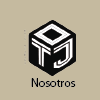
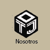

HISTORIA
Tecali, que fue un pueblo prehispánico, en náhuatl significa "Casa de Piedra," pues tiene una inmensa riqueza de ónix y mármol. Asímismo, Tecali es un lugar turistico por la amplia cantidad de artesanias.
MISIÓNSer reconocidos en todo el pais.
VISIÓN
Dar una buena vista a su hogar y ser uno de los mejores distribuidores de onix en tijuana.
 
